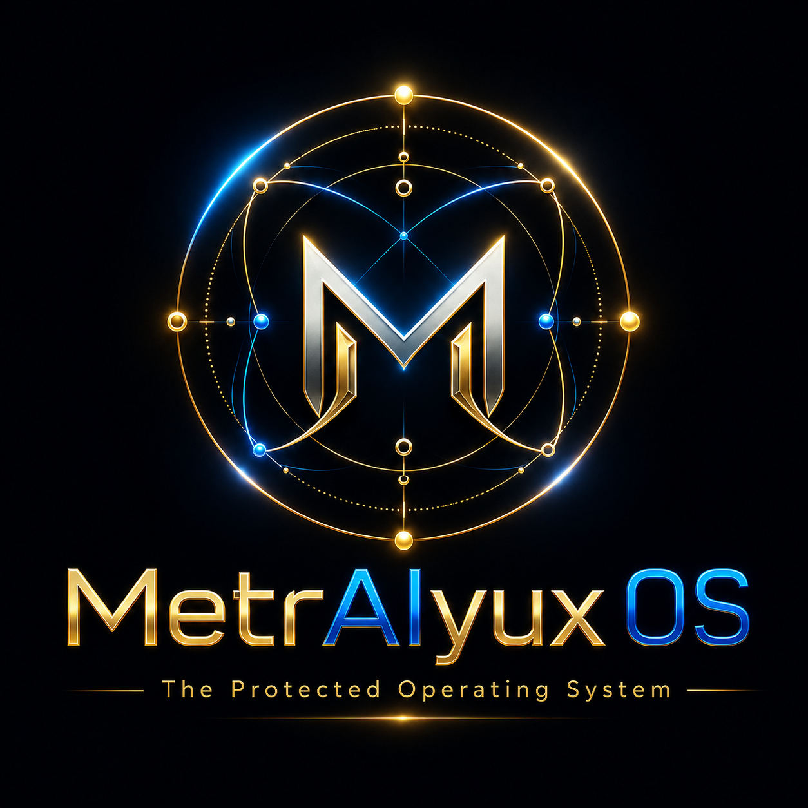

Transparent floating wordmark
Use for hero sections, admin login, sales decks, customer portal headers, and brand-led screenshots. No box. No container. Let it float.
Open PNG MetrAIyux 0S
MetrAIyux 0SBrand asset lock
The selected platform identity uses the metallic M mark, orbital operating-system ring, electric blue glow, and gold accent system. The transparent versions float with no container and are the default across public, admin, SaaS, and brain surfaces.
Use for hero sections, admin login, sales decks, customer portal headers, and brand-led screenshots. No box. No container. Let it float.
Open PNGUse for header marks, favicons, app icons, brain cards, portal badges, and compact UI.
Open PNG
Use when a full premium brand panel is needed. This version intentionally keeps the dark background as a presentation poster.
Open PNG